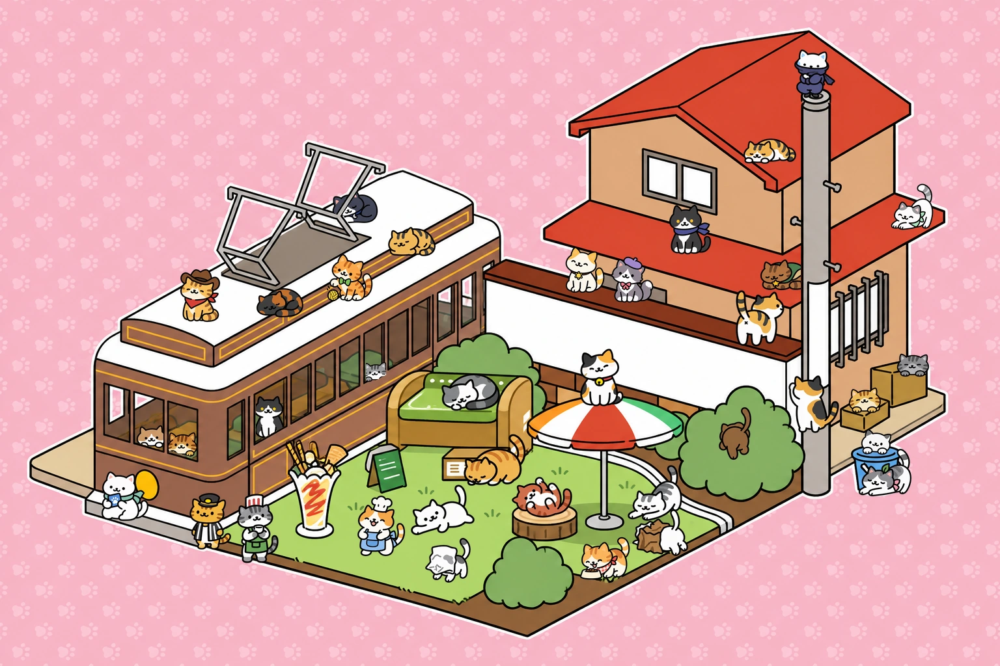
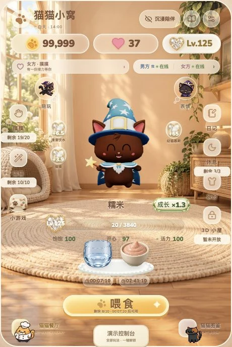
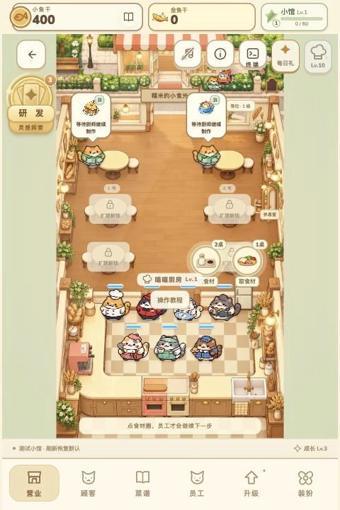

3D PREVIS AI RENDER WORKFLOW COMPARISON Seedance 2.0 Direct the camera.Reinvent the world. 05/2026 Drag to reveal ←→ LOADING VIDEO0% Retry
Journey to Another World Real Cinema to AI Video Seedance 2.005/2026 Play 0:00 / 0:36 Sound off Watch Journey to Another World ↗
 01 / 猫猫小窝一起，把猫慢慢养大。体验小窝 ↗ 02 / 猫猫餐厅一间小馆，热气腾腾。体验餐厅 ↗ INDEPENDENT GAME · AI COLLABORATION Vibe Coding 猫猫小窝 ＆ 猫猫餐厅独立游戏制作 · 创意 / 设计 / 开发 EXPLORE THE PLAYABLE WORLD ↗